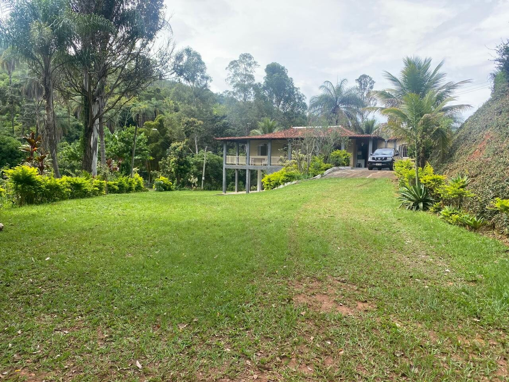
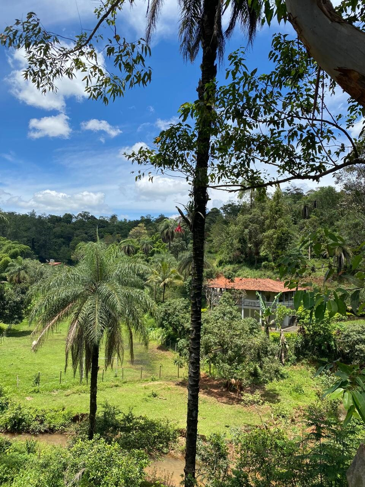
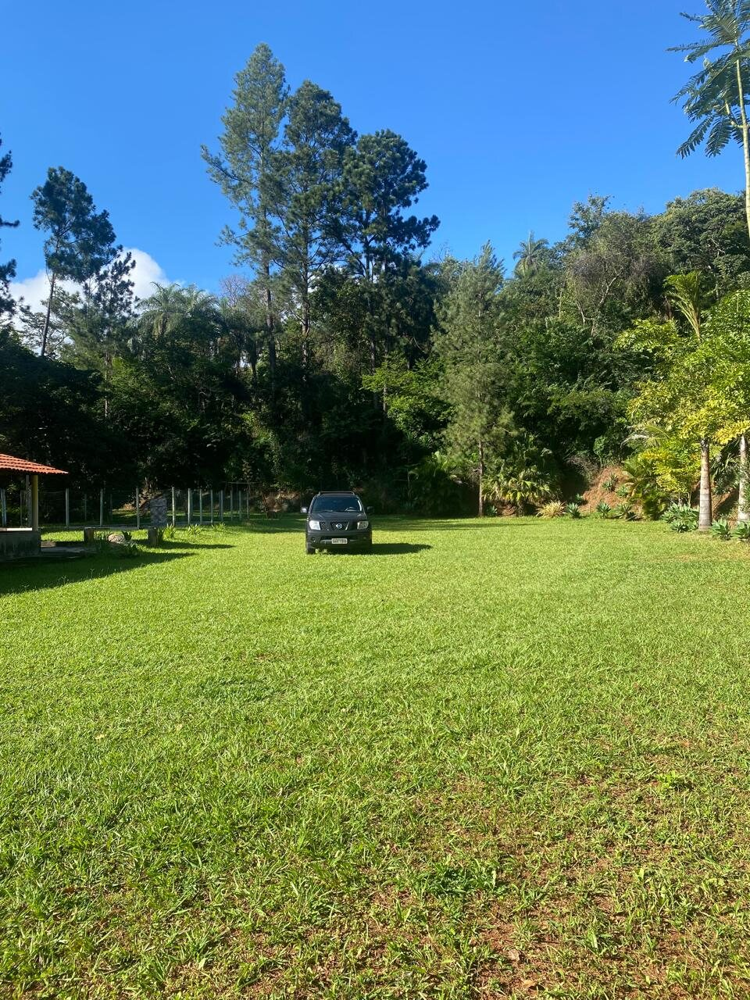
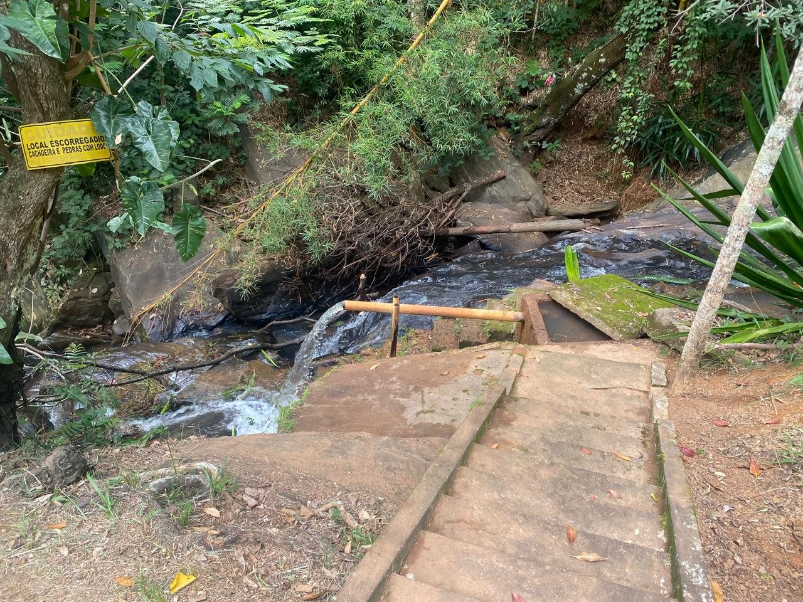
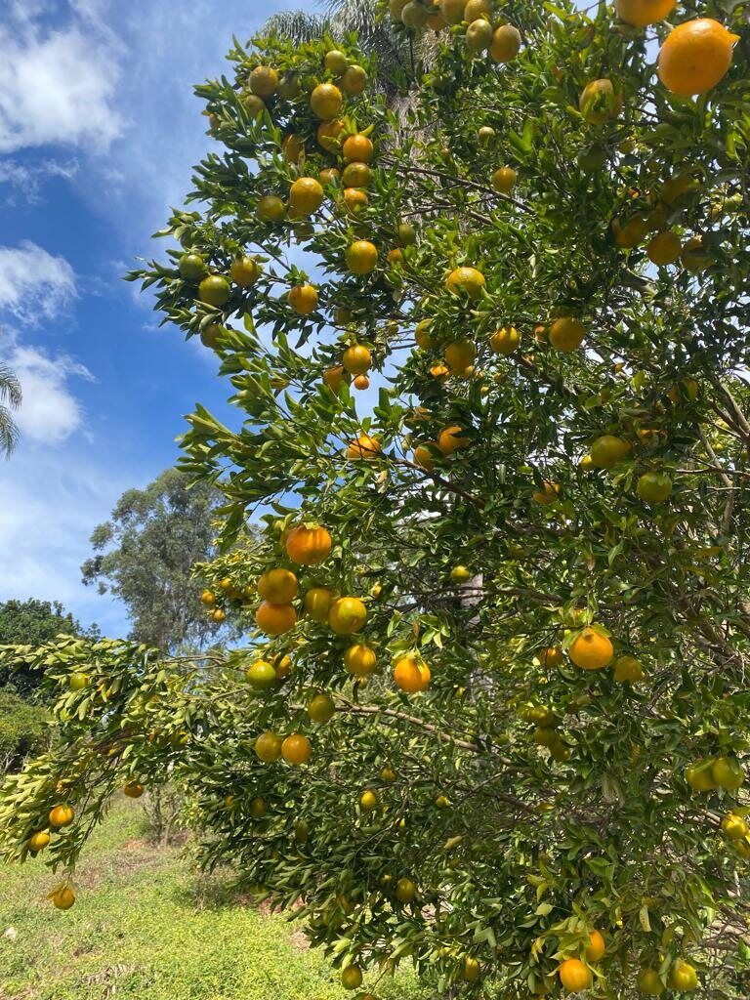
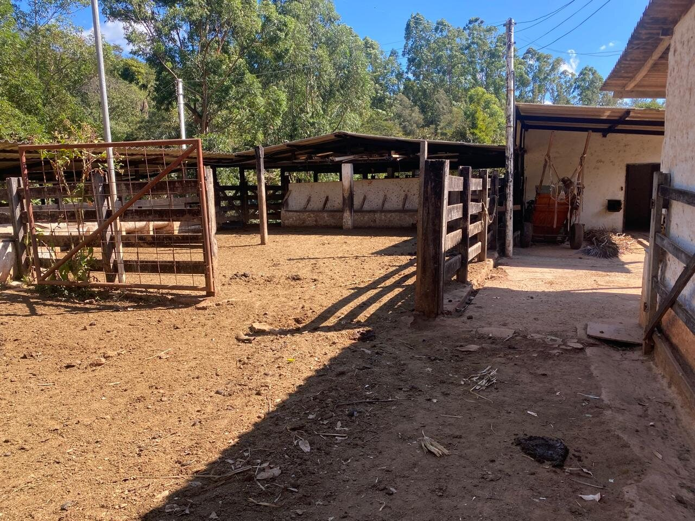

Hectares
Área ampla para lazer, produção rural e novos projetos.

Fazenda à venda em Vale das Flores, Ravena, Sabará - MG
47,9 hectares com casa sede, cachoeira, lagoas, lazer e infraestrutura rural a poucos minutos de Belo Horizonte.
Visão geral
A Fazenda Raveneza reúne estrutura pronta, recursos naturais e localização estratégica para quem busca uma fazenda perto de Belo Horizonte com forte potencial de valorização.
O conjunto combina casa sede, piscina, campo, quadras, jardins, pastagens, pomar, horta e áreas de água, criando uma propriedade versátil para uso familiar, turismo rural ou projeto de renda.
Destaques
Área ampla para lazer, produção rural e novos projetos.
Principal diferencial hídrico da fazenda, acompanhadas por cachoeira na propriedade.
Presença de água como diferencial de uso e valorização.
Fazenda em Vale das Flores, Ravena, na região metropolitana da capital.
Piscina, campo, quadras e áreas de convivência.
Venda por R$ 5.800.000, com abertura para negociar.
Galeria

Casa sede
A sede fica integrada ao verde, com gramados, varandas e áreas cobertas para receber família, amigos ou visitantes em projetos de hospedagem e eventos.
Estrutura de lazer
Área de lazer integrada ao verde, pronta para uso familiar ou comercial.
Estrutura esportiva para lazer, eventos e temporadas.

Áreas verdes que valorizam a experiência de chegada e permanência.
Recursos naturais
As 2 nascentes são o principal diferencial hídrico da Fazenda Raveneza. A propriedade também conta com cachoeira, riacho e lagoas, ampliando seu potencial para lazer, turismo e valorização.

Produção rural
A fazenda preserva vocação rural, com áreas de pastagem, curral, animais, pomar, horta e árvores frutíferas. É uma base pronta para lazer produtivo ou operação agropecuária.


Localização
A Fazenda Raveneza está em Vale das Flores, Ravena, parte do município de Sabará, em uma região com acesso estratégico para quem quer manter proximidade com Belo Horizonte sem abrir mão de área, privacidade e natureza.
Área aproximada em Vale das Flores, Ravena, Sabará. A localização precisa é compartilhada diretamente no agendamento.
Potencial de investimento
Água, lazer e natureza como base para hospedagem rural.
Área e ambiência rural para projeto equestre.
Localização e extensão como diferenciais de valorização.
Estrutura de lazer, jardins e acesso para encontros e celebrações.
Cachoeira, lagoas e produção rural para experiência de visitação.
Pastagens, curral, água e áreas produtivas já presentes.
Documentação
Informações documentais e detalhes da propriedade podem ser apresentados diretamente aos compradores interessados, com condução objetiva para análise, visita e proposta.
Valor da venda
Uma propriedade com água, lazer e infraestrutura pronta na região metropolitana de Belo Horizonte, com valor de venda claro e abertura para negociação direta.
Agende uma visita
O próximo passo é simples: fale pelo WhatsApp, tire dúvidas e combine uma visita para conhecer a propriedade.
Falar no WhatsApp